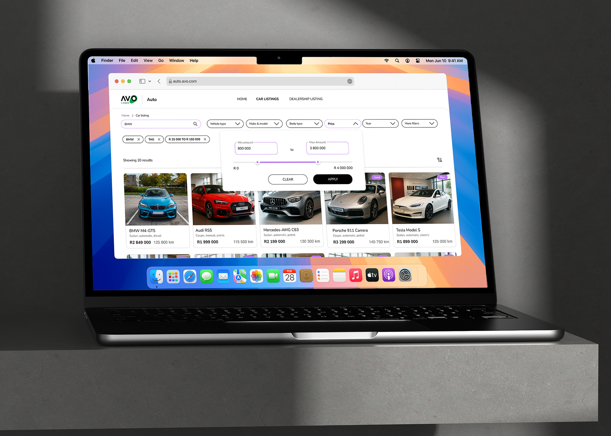
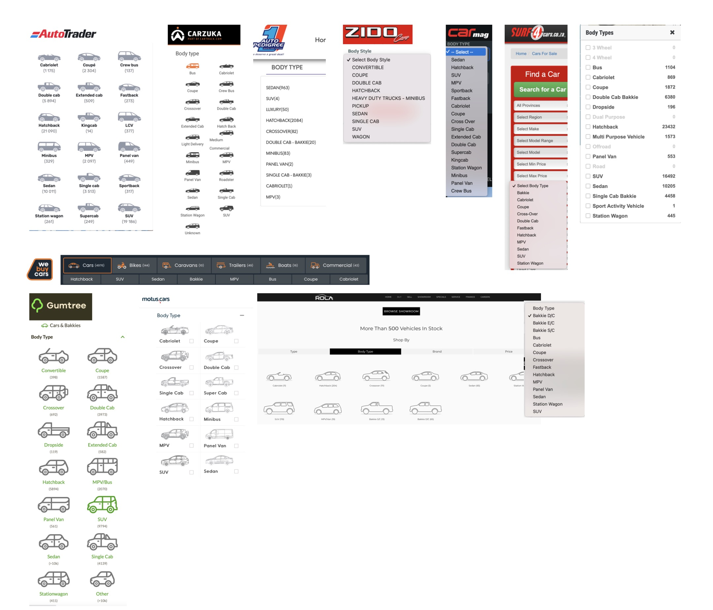
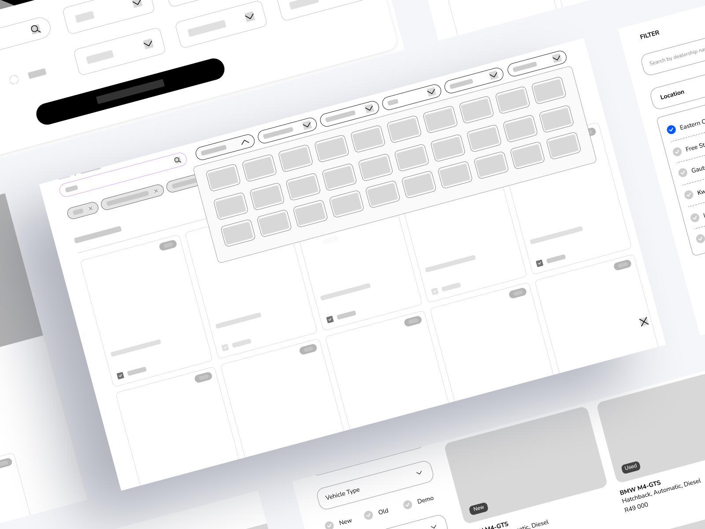
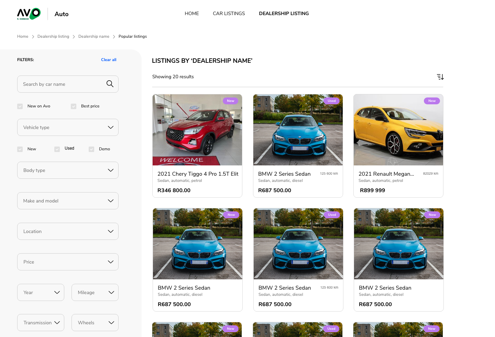
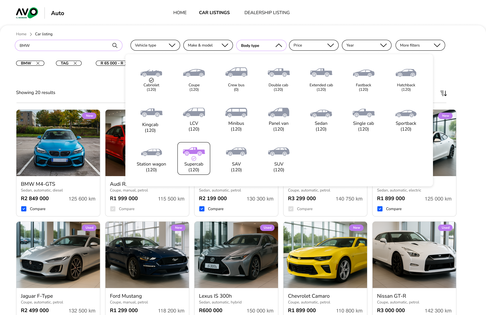
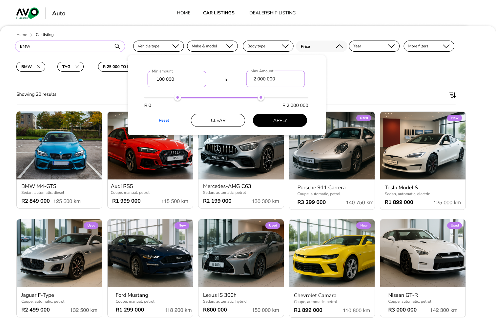
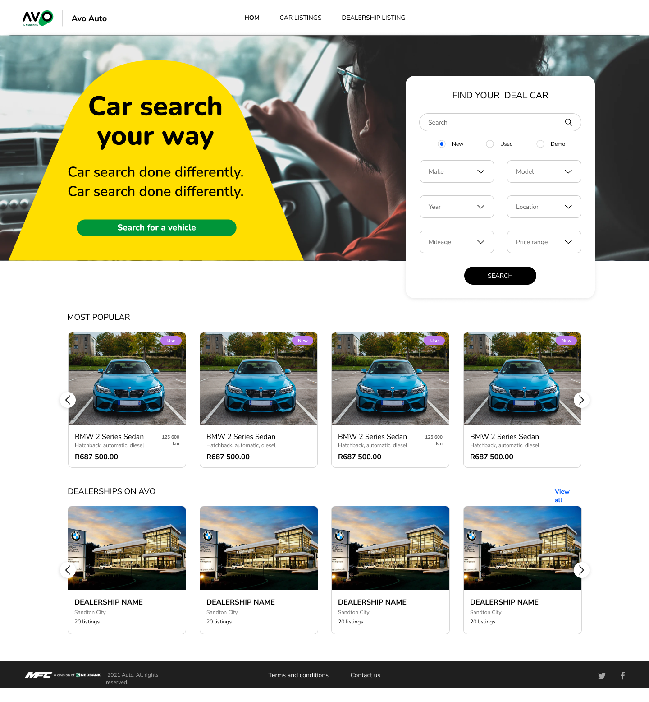
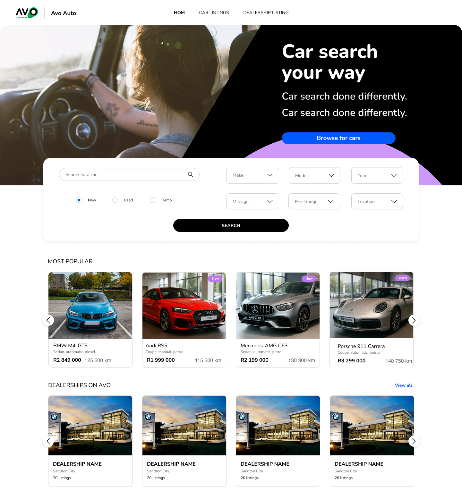
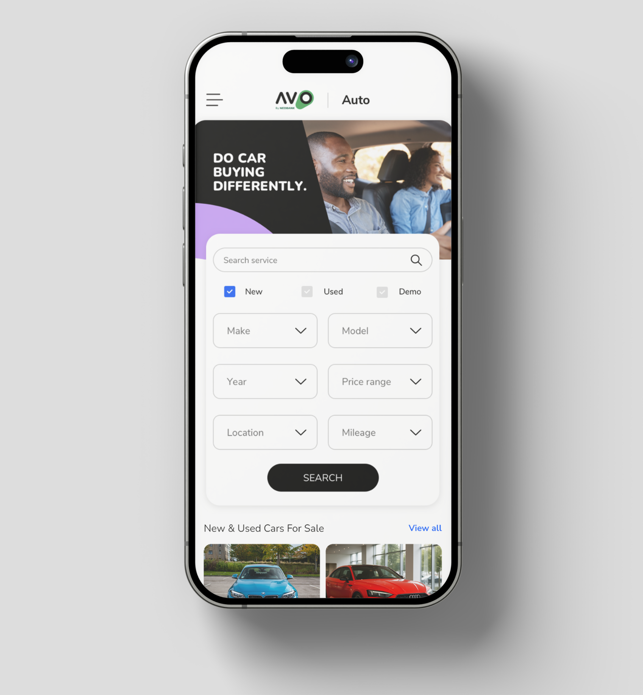

Overview
Avo Auto provides customers with a vast, curated selection of pre-owned vehicles. While the inventory was impressive, the user experience for finding a specific car was not. Customers were presented with a static, overwhelming list of filters that were cumbersome to navigate. The result was a frustrating search experience, often leading to abandoned sessions and missed sales opportunities.
As the lead UX designer, my primary responsibility was to solve this problem by reimagining the entire search and filter experience. I worked in close collaboration with a talented team of UI designers to transform the product from a static list of options into a dynamic, intuitive tool. My focus was on understanding user behavior, defining the new information architecture, and validating the design through testing.

The Design Process
My approach was rooted in a user-centric methodology, focusing on research and rapid iteration to arrive at an effective solution.

Discovery & Research
I began by gathering insights to understand the root cause of the user frustration.
Heuristic Analysis
I conducted a detailed review of the existing system, identifying violations of usability principles such as a lack of flexibility and efficiency.
Competitive Analysis
I examined how leading competitors in the automotive and e-commerce spaces handled search and filtering. This provided inspiration and helped identify best-in-class patterns, such as dynamic filters and clear visual feedback.
User Personas
By collaborating with the team, we developed personas that represented Avo Auto’s key customer segments. This allowed me to design with specific user goals and pain points in mind. For example, a “first-time buyer” had different filtering needs than a “car enthusiast.”
Insights
From the research we found that most customers will start an initial search for a vehicle on their mobile device but will possibly continue a more detailed search on their laptops or desktop PCs.
The use of too many drop-down lists also seemed to be quite cumbersome as the make, model and variant lists made the lists rather long which added to the difficulty of the long vertical format of the UI.
Another interesting behaviour we observed was that most only used a limited number of filters, namely: make and model, vehicle body type, price, year, and mileage. The other filters were used to narrow down after “short-listing”.
A few even asked if there was a compare function so that they could compare some of their choices. Most customers usually have an idea of the type of vehicle they want, and even the brand and price range; this is usually the case because they have been searching on other sites.
Ideation & Wireframing
With a clear understanding of the problem and user needs, I began exploring potential solutions. My goal was to move away from a one-size-fits-all approach and create a system that felt intelligent and responsive.

The Solution
The final design for the Avo Auto search and filter system was a direct result of this iterative process and a strong collaboration with the UI team.

Old Vertical Filter vs. New Filter Chips
Our research showed the old vertical layout was overwhelming and hard to use on mobile devices. Using “filter chips” helped improve user engagement and search efficiency, creating a more modern and effective search experience.


Design Iterations
To ensure we arrived at the most optimal layout for mobile and desktop screens, I led several design iterations, testing different chip alignments and slider behaviors.



The Impact
By focusing on user needs and a structured design process, the redesign transformed a point of frustration into a core strength of the product. While specific metrics are proprietary, the outcomes of the new system led to:
- Higher Engagement: A more intuitive search experience encouraged users to explore the inventory more deeply.
- Reduced Time-to-Result: The dynamic filters and clear visual cues allowed users to find the vehicles they wanted significantly faster.
- Design System Alignment: The new design set a standard for a more modern and thoughtful user experience across the entire Avo Auto platform.